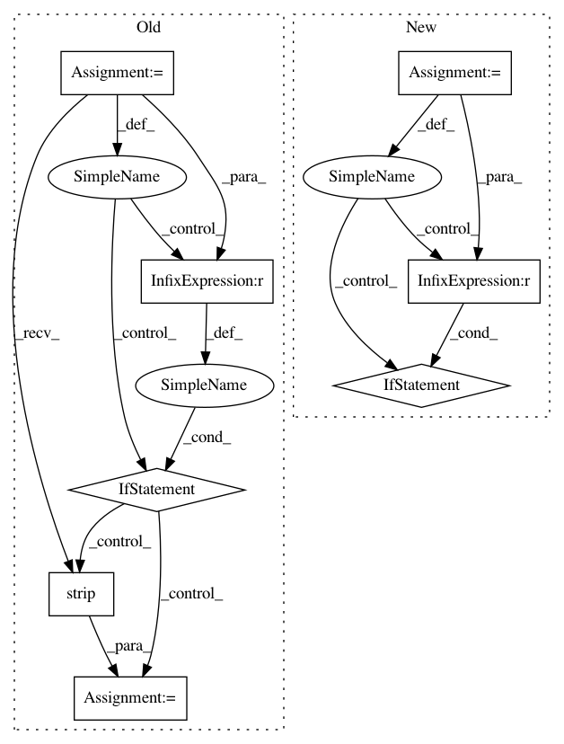

051bd416d3c41002f6d58b9dd71516a27243d178,thumt/launcher/translator.py,,main,#Any#,137
Before Change
model_cls = models.get_model(args.model)
params = default_parameters()
params = merge_parameters(params, model_cls.get_parameters())
params = override_parameters(params, args)
// Build Graph
with tf.Graph().as_default():
// Read input file
sorted_keys, sorted_inputs = dataset.sort_input_file(params.input)
// Build input queue
features = dataset.get_inference_input(sorted_inputs, params)
// Build model
model = model_cls(params)
inference_fn = model.get_inference_func()
predictions = search.create_inference_graph(inference_fn, features,
params)
if not tf.gfile.Exists(params.path):
raise ValueError("Path %s not found" % params.path)
sess_creator = tf.train.ChiefSessionCreator(
checkpoint_dir=params.path,
config=session_config(params)
)
results = []
with tf.train.MonitoredSession(session_creator=sess_creator) as sess:
while not sess.should_stop():
results.append(sess.run(predictions))
message = "Finished batch %d" % len(results)
tf.logging.log(tf.logging.INFO, message)
// Convert to plain text
vocab = params.vocabulary["target"]
outputs = []
for result in results:
outputs.append(result.tolist())
outputs = list(itertools.chain(*outputs))
restored_outputs = []
for index in range(len(sorted_inputs)):
restored_outputs.append(outputs[sorted_keys[index]])
// Write to file
with open(params.output, "w") as outfile:
for output in restored_outputs:
decoded = [vocab[idx] for idx in output]
decoded = " ".join(decoded)
idx = decoded.find(params.eos)
if idx >= 0:
output = decoded[:idx].strip()
else:
output = decoded.strip()
outfile.write("%s\n" % output)
if __name__ == "__main__":
After Change
model_cls = models.get_model(args.model)
params = default_parameters()
params = merge_parameters(params, model_cls.get_parameters())
params = import_params(args.path, args.model, params)
override_parameters(params, args)
// Build Graph
with tf.Graph().as_default():
// Read input file
sorted_keys, sorted_inputs = dataset.sort_input_file(params.input)
// Build input queue
features = dataset.get_inference_input(sorted_inputs, params)
// Build model
model = model_cls(params)
inference_fn = model.get_inference_func()
predictions = search.create_inference_graph(inference_fn, features,
params)
if not tf.gfile.Exists(params.path):
raise ValueError("Path %s not found" % params.path)
sess_creator = tf.train.ChiefSessionCreator(
checkpoint_dir=params.path,
config=session_config(params)
)
results = []
with tf.train.MonitoredSession(session_creator=sess_creator) as sess:
while not sess.should_stop():
results.append(sess.run(predictions))
message = "Finished batch %d" % len(results)
tf.logging.log(tf.logging.INFO, message)
// Convert to plain text
vocab = params.vocabulary["target"]
outputs = []
for result in results:
outputs.append(result.tolist())
outputs = list(itertools.chain(*outputs))
restored_outputs = []
for index in range(len(sorted_inputs)):
restored_outputs.append(outputs[sorted_keys[index]])
// Write to file
with open(params.output, "w") as outfile:
for output in restored_outputs:
decoded = []
for idx in output:
if idx == params.mapping["target"][params.eos]:
break
decoded.append(vocab[idx])
decoded = " ".join(decoded)
outfile.write("%s\n" % decoded)
In pattern: SUPERPATTERN
Frequency: 3
Non-data size: 8
Instances
Project Name: THUNLP-MT/THUMT
Commit Name: 051bd416d3c41002f6d58b9dd71516a27243d178
Time: 2017-11-11
Author: playinf@stu.xmu.edu.cn
File Name: thumt/launcher/translator.py
Class Name:
Method Name: main
Project Name: biocore/scikit-bio
Commit Name: a32b6ba661206b12841e0a7cf8abb16ab0782f0a
Time: 2014-08-25
Author: jai.rideout@gmail.com
File Name: skbio/io/dm.py
Class Name:
Method Name: _dm_to_matrix
Project Name: cesium-ml/cesium
Commit Name: 1cf1a4c00ba6404bb7387c722187a22357b2f193
Time: 2015-02-13
Author: a.crellinquick@gmail.com
File Name: mltsp/custom_feature_tools.py
Class Name:
Method Name: parse_tsdata_from_file